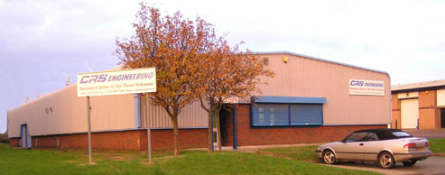

Founded in 1999, CRS Engineering is a small privately owned company which specialises in the manufacture of Heat-pipes and and is acknowledged internationally for providing customer specific thermal solutions.
CRS Engineering concentrates its efforts at the leading edge of thermal technologies. Investing into research and development, and with an active involvement in customer applications, CRS Engineering has made cutting edge advances in Heat-pipe technology, further elevating operational and performance capabilities of specific thermal systems. In response to customers requirements for components of optimal quality, performance and reliability, CRS Engineering sets exacting standards.

All Heat-pipes and integrated thermal systems produced by CRS Engineering under go in-process checks and are all individually inspected and performance tested prior to despatch. CRS Engineering has also wide experience in confidential technical development projects, including classified military defence work.
An expanding client base ranges from companies involved in textiles, plastics, electronics, as well as automotive, medical, aerospace and defence industries. As well a catering for quantitative serial production, CRS Engineering is always interested in becoming involved with customers having limited quantity demand requirements, including singular components, bespoke and special proto-type assemblies.